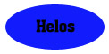
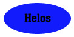

Testors 1/48 Travel Air Mystery Ship
Kit #0916 MSRP $6.50
Images and text Copyright © 2005 by Matt Swan
Developmental Background
The National Air Race or so-called “Unlimited Free-For-All Race” was basically a showcase for the larger aircraft manufactures and military pursuit aircraft during the late 1920s. In 1929 the racing fans were looking forward to the competition between the US Army Curtiss P-3-A and the Navy’s Curtiss F6C-C Hawk as this was the first time since 1925 that the two services had flown against each other. Other entrants in the race were basically ignored at the moment but Herbert Rawdon and Walter Beech of Travel Air had other plans for the race with their new design of racing aircraft. The Travel Air entrant (the model R) was an exercise in cutting edge technology. She was not only a low-wing monoplane but also featured interchangeable wings to be used for different types of racing and powered by a 300 hp Wright Whirlwind (J-6 Series) R-975 engine. It was dubbed the "Mystery Ship" because when it arrived in Cleveland it was immediately moved to a hangar and covered with a tarpaulin.
During the race, the "Mystery Ship" piloted by Doug Davis, took the lead twice in spite of recircling a pylon that Davis cut short on the second lap. The rules required missed pylons to be recircled. This caused Davis to be passed by the rest of the field, but Davis was able to take the lead again and at the end of the race he was declared the winner. Davis completed the 10 mile, 5 lap course at an average speed of 194.9 mph. The P-3-A was second at 186.8 mph, a Lockheed Vega came in third at 163.4 mph, and the Navy’s Curtiss Hawk was fourth at 153.4 mph. The fastest lap was 208.69 mph and 235 mph in the straight-aways. This was faster than any civilian airplane had ever flown in the U.S. The news people jumped all over the military and peppered them with questions of how could an off-the-shelf airplane beat the best U.S. military airplanes. Needless to say it was somewhat embarrassing.
The Italian government was so impressed with the Model R that it purchased one as a model for future military designs. In 1930 Capt. Frank M. Hawks had a Travel Air "Mystery S" built for him named "Texaco 13." Using this aircraft Hawks was a two time holder of the east-west transcontinental speed record. A total of six Travel Air Model Rs were built. Travel Air built five and the sixth was built from an incomplete fuselage and other parts acquired from Travel Air.
The Kit
This was originally a Hawk kit first issued in 1965 and later acquired by Testors along with a lot of other Hawk molds. Considering the age of the molds the kit is pretty good. The parts all have engraved panel lines, they are a little large but I have seen worse. There is a slight level of flash around some of the parts but again, I’ve seen worse. The kit has an engraved line that demarks to paint pattern which would be most helpful for the beginner modeler.
The kit’s engine is very well detailed with individual push rods and well detailed cylinder heads but one all this gets placed inside the cowl you will be hard pressed to see any of it. The interior of the cockpit is totally bare. The kit provides a single plank for the pilot to sit on. The pilot figure is adequately done with a joy stick cast in his hand. If you do not choose to put the figure in place to fill the hole you will need to perform a lot of scratch work – I think I’ll just fill the hole with the pilot. Overall assembly looks to be very straight forward and simple. When dry fitting pieces they seemed to go together well with good alignment. Some small degree of putty will be needed but nothing serious. There are some light sink holes on each outboard wing surface that will need filling. The kit has only one clear part that is well done and forty four light gray plastic pieces for a total of forty five pieces in the box.
Decals and Instructions
The kit instructions are buried inside a large amount of advertising for other Testors kits. Once you get past that you have a nice black and white picture of the Model R and a good historical background. Following this is a full page of basic model building instructions. We don’t actually get to assembly instructions until step six and step seven. Step eight of the instructions covers decal placement and step nine speaks on using stretched sprue for rigging. For modelers of experience this is all pretty Ho-hum but for a beginner it would be most useful.
Decals are provided for a single aircraft, the Thompson Trophy winner. White numerals 31 are provided four times but exactly how many of these should be used and their exact alignment is a matter of some debate. Historical photographs are not very conclusive as to whether these numbers appeared on both lower wing surfaces or if the upper wing marking was aligned front to back or inside to outside. For real accuracy you’ll need to hit the books and make your own decisions. The decals themselves are simple with good color density and print registry.
Conclusions
This model certainly illustrates that you do not have to spend all your savings to have a fine model kit. It’s simple in construction with good instructions aimed at the beginner modeler. For the more advanced modeler it becomes more of an exercise in painting and rigging rather than in building. The model makes for a nice change of pace from the typical wartime aircraft. There is nothing on the aftermarket for this model, any dress up work will have to be all scratch work. I think this kit can make a great addition to any collection but more importantly if you know someone who wants to learn to model this would be a great place to start.